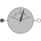
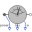
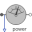
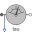
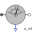
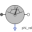

PartialRelativeSensorPartial model to measure a single relative variable between two flanges |

|
Information
This information is part of the Modelica Standard Library maintained by the Modelica Association.
This is a partial model for 1-dim. rotational components with two rigidly connected flanges in order to measure relative kinematic quantities between the two flanges or the cut-torque in the flange and to provide the measured signal as output signal for further processing with the blocks of package Modelica.Blocks.
Connectors (2)
Extended by (6)
|  |
Modelica.Mechanics.Rotational.Sensors
Ideal sensor to measure the torque and power between two flanges (= flange_a.tau*der(flange_a.phi)) and the absolute angular velocity |
|  |
Modelica.Mechanics.Rotational.Sensors
Ideal sensor to measure the power between two flanges (= flange_a.tau*der(flange_a.phi)) |
|  |
Modelica.Mechanics.Rotational.Sensors
Ideal sensor to measure the torque between two flanges (= flange_a.tau) |
|  |
Modelica.Mechanics.Rotational.Sensors
Ideal sensor to measure the relative angular acceleration between two flanges |
|
Modelica.Mechanics.Rotational.Sensors
Ideal sensor to measure the relative angular velocity between two flanges |
|
|  |
Modelica.Mechanics.Rotational.Sensors
Ideal sensor to measure the relative angle between two flanges |